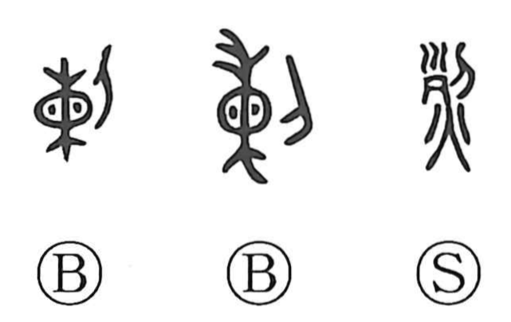

烈

Kun: hageshii | On: retsu
fierce ・ intense ・ severe ・ merit
Explanation
烈 combines 列 with 火. 列 originally depicts a corpse whose head has been cut off, the head and body set apart; when fire is added, the graph evokes the burning of those remains, and by extension the force of something violent, vehement, and stern. The Shuowen glosses it as a wild blaze, underscoring the fierce power of a conflagration. In bronze inscriptions the form appears as 剌, the image of a knife cutting open a loaded sack (柬) so that the contents burst forth; this writing was borrowed for 烈 and gave rise to a secondary use meaning distinguished service or merit, seen in compounds like 功烈 and in honorific titles such as 烈祖, which extol ancestral virtue and authority.